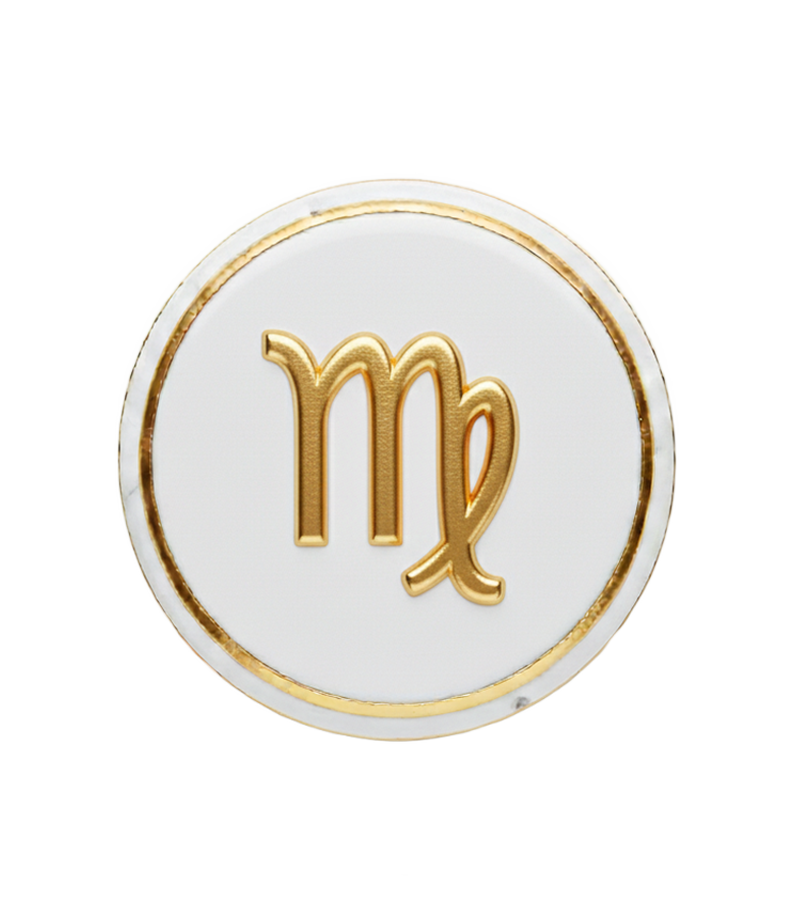
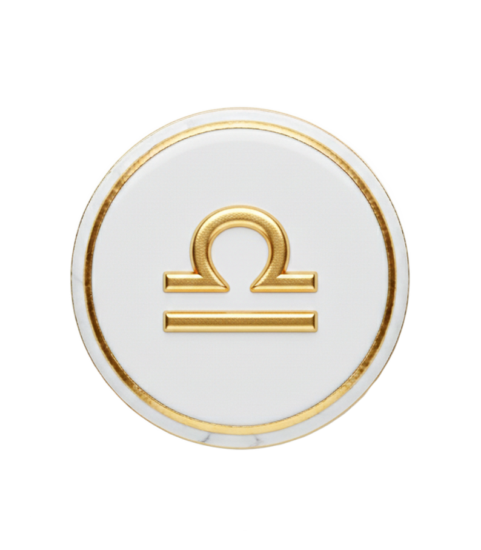
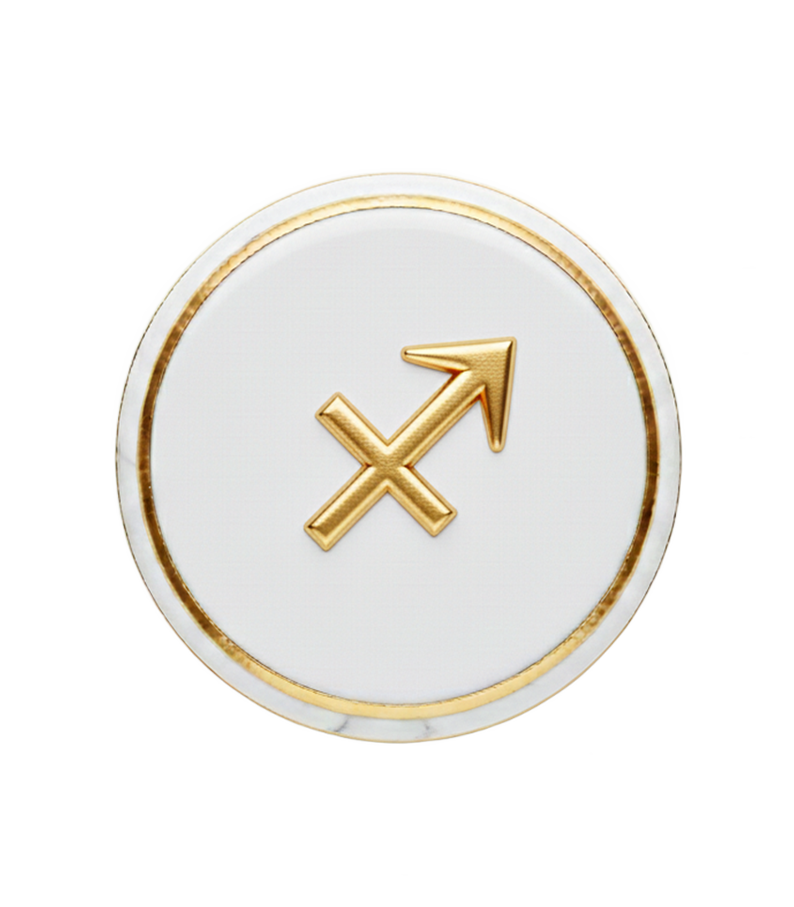
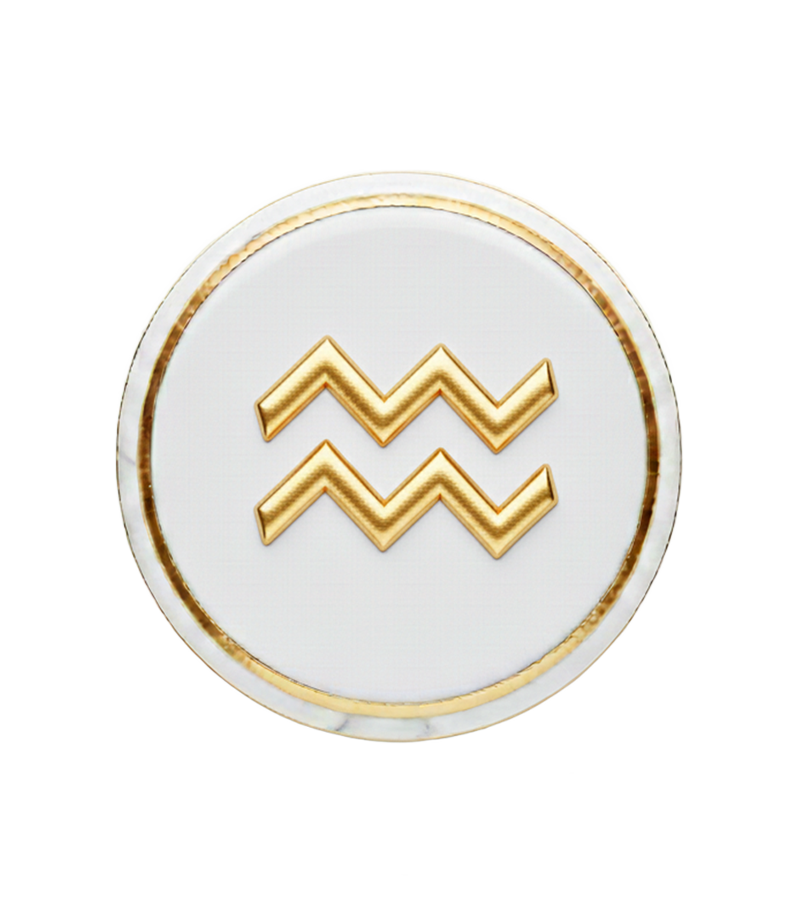
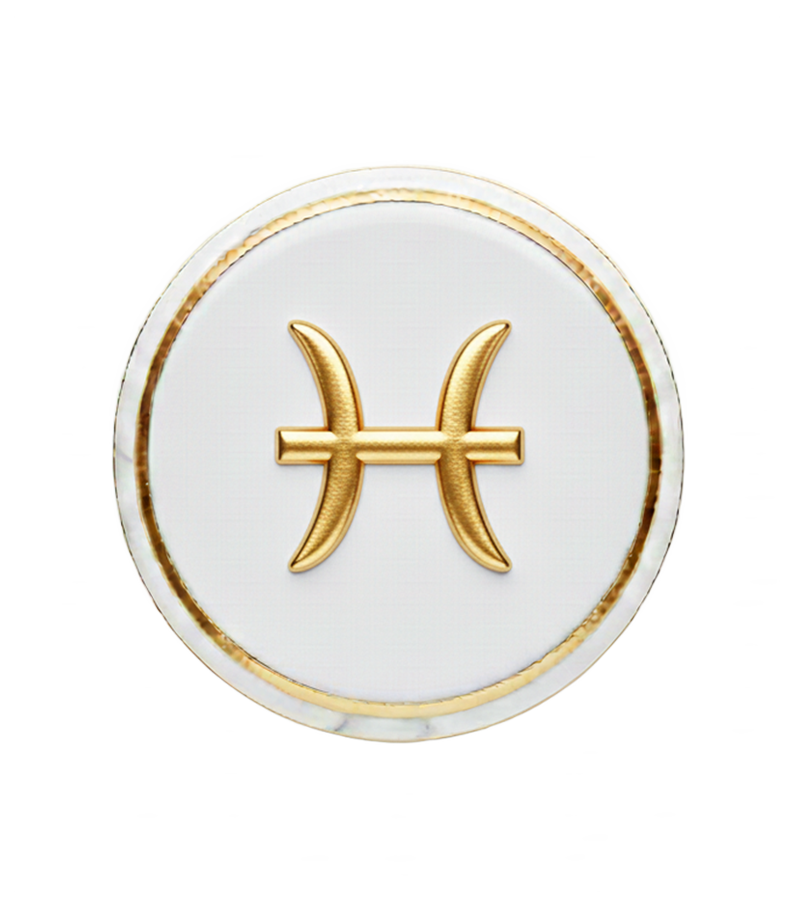

RED FLAGS
L'Oracle du Chaos
Qui sont les coupables ?
VS
Indice de Toxicité
0%
Niveau : Risque Biologique
...
Le Mur de la Honte
Cliquez sur un signe pour découvrir sa vérité toxique...

Bélier

Taureau

Gémeaux

Cancer

Lion

Vierge

Balance

Scorpion

Sagittaire

Capricorne

Verseau

Poissons